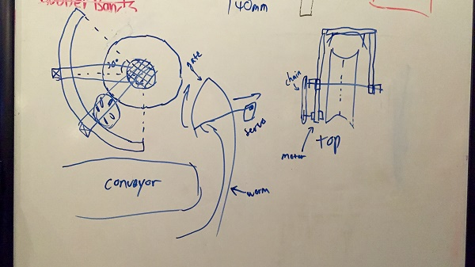
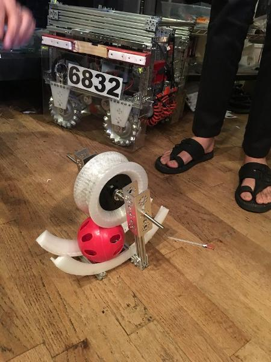
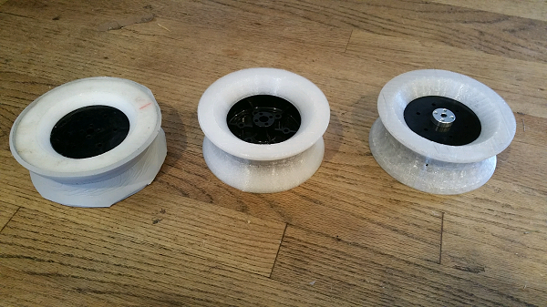

I was going to make a Windows 10 joke but then we stopped using the catapult at version 8.

So while our catapult was good, we needed something better. It frequently missed and had other issues due to it being dependent on elastic bands that can lose tension over time. It would occasionally miss balls from areas it would usually be able to shoot from. As well, it was just a little dangerous with the metal arm snapping up and down.
At the beginning of the year, we had toyed with the idea of using a flywheel on our robot, inspired by videos such as this, as well as other competing teams at our Wylie and Ellis Davis Field house qualifiers. So, finally, we decided to create a flywheel launcher.


We tested numerous versions of this flywheel. We printed out the same design with three different materials, high density nylon covered in foam tape, high density ninjaflex with 35% infill, and low density ninjaflex with 20% infill. We decided on the last one, as it accelerated the ball the fastest without slipping. We also designed a particle guidance system so that the balls would be more accurate in making the vortex shots.
<infomercial>
This beautiful piece of machinery is a particle accelerator, which has a huge, ninjaflex, 20% infill flywheel to take all of the particles off the field, and jettison them to the moon (and back down into the vortex). We've revamped our intake system so that we can control the balls going into the accelerator. All of its important parts are designed and 3D-printed by Iron Reign. It is quite literally the best attachment we've ever designed for our robot, and probably could launch people into space faster than NASA can at the moment.
</infomercial>
We still need some finetuning in our code for the flywheel, as our autonomous isn't designed for it yet. As well, we'll probably run into some unexpected issue at the tournament, like we always do.